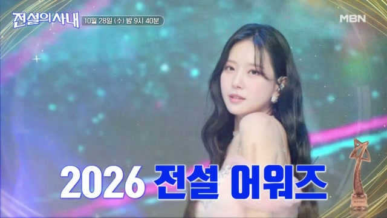
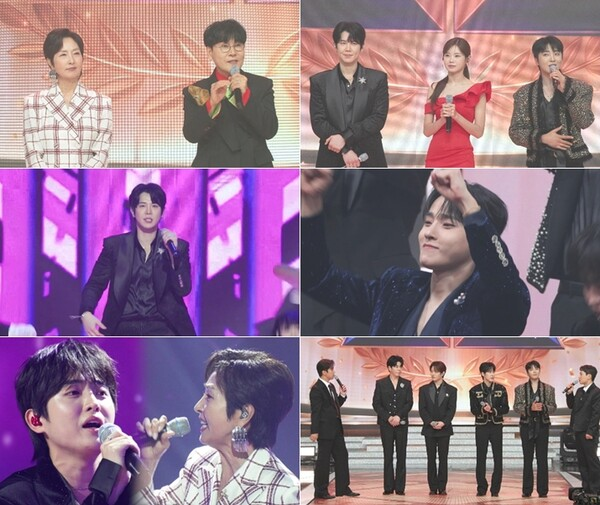
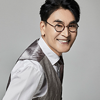

성리 조항조 듀엣 소식 들으셨나요? 전설의 사내 16회에서 두 사람이 ‘돌릴 수 없는 세월’을 함께 부를 예정이에요. 턱시도 차림의 TOP7과 레전드가 만나는 전설 어워즈, 예고에 담긴 눈물 반응부터 두 목소리의 만남이 기대되는 이유까지 차근차근 짚어봐요.
성리 조항조, 듀엣 예고가 반가운 이유
무명전설을 결승까지 한 회도 빠짐없이 봤고, 성리를 응원하면서 TOP7의 노래를 모두 좋아하는 애청자예요. 저와 부모님 모두 매일 무명전설 노래를 듣고 있어서, 좋아하는 가수가 선배와 한 곡을 함께 부른다는 소식이 무척 반갑네요. 성리 조항조 두 사람이 준비한 노래는 ‘돌릴 수 없는 세월’이에요. 전설의 사내 16회에서 만나게 될 듀엣으로 예고돼 있어요. KBS 가요무대에는 성리가 조항조의 ‘고맙소’를 부른 무대도 있어요. 선배의 노래를 자기 목소리로 들려주는 것과 당사자와 한 곡을 함께 부르는 건 또 다른 만남이겠죠. 두 사람이 같은 무대에 서게 된다는 점이 더 반가워요.
이번 무대에서 궁금한 건 두 사람이 어떤 표정을 지었는지보다 노래 안에서 어떻게 호흡을 나눌지예요. 한 사람이 노래할 때 다른 사람이 어떤 목소리로 이어받을지, 함께 부르는 부분에서는 각자의 색깔이 얼마나 또렷하게 들릴지 기대하게 되네요. 전체 무대는 본방송에서 만나게 되지만, 두 사람이 나란히 선다는 소식만으로도 귀 기울일 이유는 충분해요. 성리의 목소리를 좋아하는 입장에서는 선배와 한 곡을 채워가는 모습도 반갑게 다가오네요.
예고 화면에 적힌 전설 어워즈라는 말만 봐도 어떤 노래를 만나게 될지 설레네요.

전설의 사내 전설 어워즈 특집 예고 이미지 · 출처: MBN 홈페이지
성리 조항조 무대는 어떤 특집에서 만날까요
두 사람의 듀엣은 전설의 사내 16회 ‘전설 어워즈’ 특집에 담길 예정이에요. TOP7은 턱시도를 입고 등장하고, 조항조와 정수라는 시상식의 주최자로 참여해 심사도 맡아요. 후배들이 준비한 노래를 듣는 자리와 선후배가 함께 노래하는 자리가 한 특집 안에 마련되는 구성이네요. 조항조를 심사석에서만 만나는 게 아니라 성리의 듀엣 파트너로도 볼 수 있다는 점이 눈에 들어와요.
정수라가 하루와 함께 부르는 ‘도라지꽃’도 준비돼 있어요. 같은 특집에 선배와 후배의 듀엣이 나란히 들어가니 각 조합의 목소리를 듣는 재미도 있겠네요. 그렇다고 두 무대를 어느 쪽이 더 좋을지 미리 비교하고 싶지는 않아요. 성리와 조항조가 한 곡을 어떻게 함께 채울지에 집중해서 들으면, 시상식이라는 틀 안에서도 이 듀엣만의 인상을 차분하게 느낄 수 있을 것 같아요. 특별 무대의 감상과 경연의 수상 결과는 따로 지켜보려고 해요.
여러 무대가 모인 사진을 보니 한 곡도 놓치지 않고 들어보고 싶은 마음이 커져요.

전설 어워즈 특집의 출연진과 무대 보도스틸 · 출처: MBN 제공
눈물 반응은 예고 속 장면으로 봐요
이 듀엣과 함께 눈길을 끄는 건 멤버들의 눈물 반응이에요. 예고는 ‘돌릴 수 없는 세월’을 함께 부르는 무대에 멤버들이 눈물을 보이는 내용을 담고 있어요. 다만 이 반응만으로 전체 노래의 분위기나 출연자 한 사람 한 사람의 마음까지 설명할 수는 없어요. 누가 어떤 사연을 떠올렸는지, 어느 대목에서 감정이 커졌는지는 본방송의 흐름을 보고 들어야 알 수 있겠네요.
저도 이런 예고를 보면 곧바로 노래가 궁금해져요. 짧은 장면만으로도 관심이 가는데, 앞뒤 흐름을 함께 들으면 어떤 느낌일까요? 눈물을 흘리는 모습은 관심을 끄는 한 장면이고, 제가 듣고 싶은 건 그 장면으로 이어지는 두 사람의 노래예요. 시작부터 끝까지 이어지는 무대 안에서 감정이 어떻게 쌓이는지 직접 듣는 편이 더 오래 남는 감상이 될 것 같아요.
마이크를 잡고 노래에 집중한 성리의 모습은 역시 반갑고 든든하게 느껴져요.
가요무대에서 고맙소를 부르는 성리 자료사진 · 출처: KBS 홈페이지
두 목소리에서 귀 기울이고 싶은 부분
제가 기대하는 관전 포인트는 ‘누가 더 잘하나’라는 비교보다 서로의 노래를 어떻게 받아주는지예요. 같은 곡을 둘이 부르면 한 목소리로 시작한 문장이 다른 목소리를 만나면서 어떤 느낌이 될지 상상하게 되거든요. 성리가 혼자 부르는 구간과 조항조가 이어가는 구간이 어떻게 구성될지는 아직 모르지만, 각자의 소리를 충분히 듣고 둘이 만나는 부분까지 따라가 보고 싶어요. 파트나 편곡을 미리 단정하지 않고 듣는 재미를 남겨두려고요.
작은 표현도 궁금해요. 한 구절의 끝을 길게 남길지, 담백하게 마칠지에 따라 제게 닿는 느낌이 달라질 수 있으니까요. 이런 작은 차이까지 따라가며 듣는 재미를 기대하고 있어요. 고음이나 큰 반응이 있는 순간만 기다리기보다 첫 소절부터 집중해서 들어보면 좋겠네요. 둘이 함께 부르는 노래 안에서 성리의 목소리가 제게 어떻게 들리는지, 조항조와 나란히 섰을 때 어떤 인상이 남는지 차분히 느껴보고 싶어요.
사진 속 표정들만 봐도 무대에 푹 빠진 분위기가 전해져 본방송이 더 기다려지네요.
전설의 사내 성리 무대의 공식 썸네일 자료사진 · 출처: MBN Entertainment 공식 유튜브
완곡으로 만나고 싶은 돌릴 수 없는 세월
전설 어워즈는 ‘수라상’과 ‘조항조항상’이라는 이름도 내세우고 있어요. 흥미로운 시상식 구성을 보는 재미가 있겠지만, 이 글에서 가장 기다리는 장면은 역시 두 사람이 함께 부를 노래예요. 어떤 상을 누가 받는지와 별개로, 한 곡을 함께 준비한 선후배의 목소리를 충분히 들을 수 있으면 좋겠어요. 짧은 예고에서 눈길을 끈 듀엣이 완곡으로는 어떤 여운을 남길지 궁금하네요.
방송을 본 뒤에는 예고에서 떠올렸던 기대와 실제로 귀에 남은 대목을 나눠 생각해보고 싶어요. 특히 감동이라는 말부터 붙이기보다, 어떤 목소리와 표현이 좋았는지 제 느낌을 천천히 찾아보려고 해요. 성리의 노래를 좋아하는 마음에 더해 함께 부르는 상대의 목소리도 놓치지 않고 듣고 싶네요. 전설의 사내 16회는 그런 마음으로 기다리게 되는 회차예요. ‘돌릴 수 없는 세월’이라는 한 곡 안에서 두 사람이 만들어갈 만남을 본방송으로 만나보려고요.
조항조의 부드러운 미소를 보니 성리와 어떤 호흡을 들려줄지 더욱 궁금해져요.

MBN 우리들의 트로트 조항조 출연자 자료사진 · 출처: MBN 홈페이지
Q. 성리와 조항조가 함께 부르는 곡은 무엇인가요?
A. ‘돌릴 수 없는 세월’이에요. 전설의 사내 16회 듀엣 무대로 예고돼 있어요.
Q. 두 사람의 듀엣은 이미 방송된 무대인가요?
A. 아직 본방송 전인 예고 단계예요. 멤버들의 눈물 반응도 예고에 담긴 내용이며, 전체 무대에 대한 시청 후기는 아니에요.
Q. 전설 어워즈에는 어떤 선배 가수가 함께하나요?
A. 조항조와 정수라가 주최자이자 심사자로 함께해요. 정수라와 하루의 ‘도라지꽃’ 듀엣도 준비돼 있어요.
#성리조항조 #성리 #조항조 #돌릴수없는세월 #전설의사내 #전설의사내16회 #전설어워즈 #무명전설 #트로트듀엣